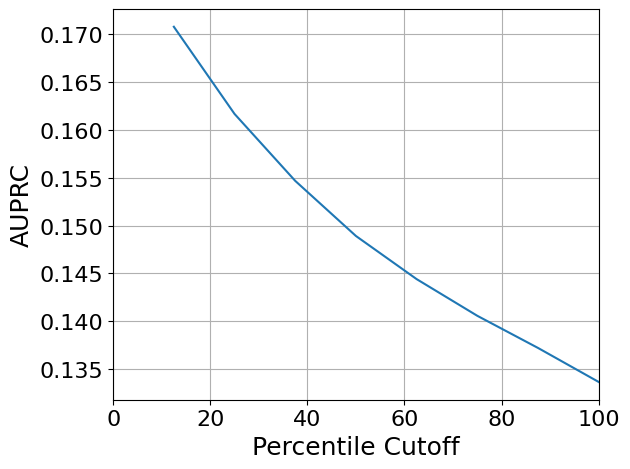
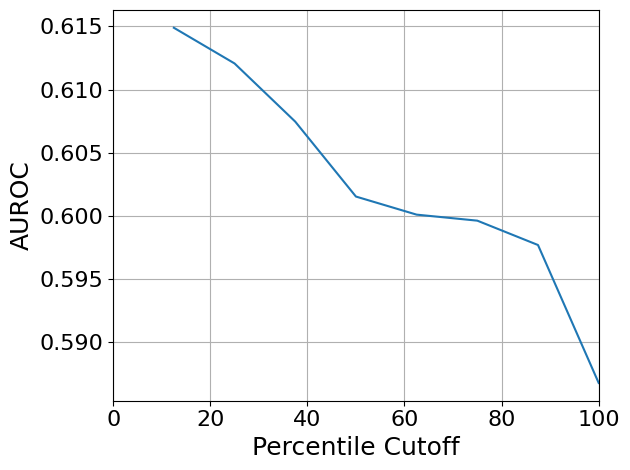

GRN calibration evaluation#
Library import#
import copy
from inferelator.postprocessing.model_metrics import RankSummaryPR, RankSummingMetric
import numpy as np
import pandas as pd
import sklearn
from matplotlib import pyplot as plt
import scanpy as sc
import scvi
from regvelo import REGVELOVI
from rgv_tools import DATA_DIR, FIG_DIR
/home/icb/weixu.wang/miniconda3/envs/regvelo-py310/lib/python3.10/site-packages/anndata/utils.py:434: FutureWarning: Importing read_csv from `anndata` is deprecated. Import anndata.io.read_csv instead.
warnings.warn(msg, FutureWarning)
/home/icb/weixu.wang/miniconda3/envs/regvelo-py310/lib/python3.10/site-packages/anndata/utils.py:434: FutureWarning: Importing read_excel from `anndata` is deprecated. Import anndata.io.read_excel instead.
warnings.warn(msg, FutureWarning)
/home/icb/weixu.wang/miniconda3/envs/regvelo-py310/lib/python3.10/site-packages/anndata/utils.py:434: FutureWarning: Importing read_hdf from `anndata` is deprecated. Import anndata.io.read_hdf instead.
warnings.warn(msg, FutureWarning)
/home/icb/weixu.wang/miniconda3/envs/regvelo-py310/lib/python3.10/site-packages/anndata/utils.py:434: FutureWarning: Importing read_loom from `anndata` is deprecated. Import anndata.io.read_loom instead.
warnings.warn(msg, FutureWarning)
/home/icb/weixu.wang/miniconda3/envs/regvelo-py310/lib/python3.10/site-packages/anndata/utils.py:434: FutureWarning: Importing read_mtx from `anndata` is deprecated. Import anndata.io.read_mtx instead.
warnings.warn(msg, FutureWarning)
/home/icb/weixu.wang/miniconda3/envs/regvelo-py310/lib/python3.10/site-packages/anndata/utils.py:434: FutureWarning: Importing read_text from `anndata` is deprecated. Import anndata.io.read_text instead.
warnings.warn(msg, FutureWarning)
/home/icb/weixu.wang/miniconda3/envs/regvelo-py310/lib/python3.10/site-packages/anndata/utils.py:434: FutureWarning: Importing read_umi_tools from `anndata` is deprecated. Import anndata.io.read_umi_tools instead.
warnings.warn(msg, FutureWarning)
/home/icb/weixu.wang/miniconda3/envs/regvelo-py310/lib/python3.10/site-packages/louvain/__init__.py:54: UserWarning: pkg_resources is deprecated as an API. See https://setuptools.pypa.io/en/latest/pkg_resources.html. The pkg_resources package is slated for removal as early as 2025-11-30. Refrain from using this package or pin to Setuptools<81.
from pkg_resources import get_distribution, DistributionNotFound
/home/icb/weixu.wang/miniconda3/envs/regvelo-py310/lib/python3.10/site-packages/anndata/utils.py:434: FutureWarning: Importing read_csv from `anndata` is deprecated. Import anndata.io.read_csv instead.
warnings.warn(msg, FutureWarning)
/home/icb/weixu.wang/miniconda3/envs/regvelo-py310/lib/python3.10/site-packages/anndata/utils.py:434: FutureWarning: Importing read_loom from `anndata` is deprecated. Import anndata.io.read_loom instead.
warnings.warn(msg, FutureWarning)
/home/icb/weixu.wang/miniconda3/envs/regvelo-py310/lib/python3.10/site-packages/anndata/utils.py:434: FutureWarning: Importing read_text from `anndata` is deprecated. Import anndata.io.read_text instead.
warnings.warn(msg, FutureWarning)
/home/icb/weixu.wang/miniconda3/envs/regvelo-py310/lib/python3.10/site-packages/anndata/utils.py:434: FutureWarning: Importing CSCDataset from `anndata.experimental` is deprecated. Import anndata.abc.CSCDataset instead.
warnings.warn(msg, FutureWarning)
/home/icb/weixu.wang/miniconda3/envs/regvelo-py310/lib/python3.10/site-packages/anndata/utils.py:434: FutureWarning: Importing CSRDataset from `anndata.experimental` is deprecated. Import anndata.abc.CSRDataset instead.
warnings.warn(msg, FutureWarning)
/home/icb/weixu.wang/miniconda3/envs/regvelo-py310/lib/python3.10/site-packages/anndata/utils.py:434: FutureWarning: Importing read_elem from `anndata.experimental` is deprecated. Import anndata.io.read_elem instead.
warnings.warn(msg, FutureWarning)
/home/icb/weixu.wang/miniconda3/envs/regvelo-py310/lib/python3.10/site-packages/jaxlib/plugin_support.py:71: RuntimeWarning: JAX plugin jax_cuda12_plugin version 0.5.0 is installed, but it is not compatible with the installed jaxlib version 0.6.2, so it will not be used.
warnings.warn(
General setting#
scvi.settings.seed = 0
[rank: 0] Seed set to 0
Constants#
DATASET = "mHSPC"
SAVE_DATA = True
SAVE_FIGURE = True
if SAVE_DATA:
(DATA_DIR / DATASET / "results").mkdir(parents=True, exist_ok=True)
if SAVE_FIGURE:
(FIG_DIR / DATASET).mkdir(parents=True, exist_ok=True)
Define functions#
We followed the GRN calibration evaluation workflow provided by PMF-GRN, please check nyu-dl/pmf-grn
RankSummingMetricCopy = copy.deepcopy(RankSummingMetric)
def get_calibration_score(to_eval, gold_standard, filter_method="overlap", method="auroc"):
"""Compute a calibration score comparing predictions to a gold standard.
Parameters
----------
to_eval : list or DataFrame
Predictions or scores to evaluate.
gold_standard : list or DataFrame
True labels for evaluation.
filter_method : str, optional
Method for filtering data before scoring (default is "overlap").
method : str, optional
Scoring metric: "auroc" or "auprc" (default is "auroc").
Returns
-------
float
Area under the ROC or PR curve as the calibration score.
"""
metrics = RankSummingMetricCopy([to_eval], gold_standard, filter_method)
if method == "auprc":
data = RankSummaryPR.calculate_precision_recall(metrics.filtered_data)
auc = RankSummaryPR.calculate_aupr(data)
elif method == "auroc":
fpr, tpr, thresholds = sklearn.metrics.roc_curve(
metrics.filtered_data["gold_standard"], metrics.filtered_data["combined_confidences"]
)
auc = sklearn.metrics.auc(fpr, tpr)
return auc
Data loading#
adata = sc.read_h5ad(DATA_DIR / DATASET / "processed" / "mHSC_ExpressionData.h5ad")
TF = pd.read_csv(DATA_DIR / DATASET / "raw" / "mouse-tfs.csv")
TF = [i[0].upper() + i[1:].lower() for i in TF["TF"].tolist()]
TF = np.array(TF)[[i in adata.var_names for i in TF]]
TF
array(['Ankrd22', 'Ankrd7', 'Arntl2', 'Batf3', 'Bcl11b', 'Bmp6', 'Btg2',
'Chd7', 'Ciita', 'Cnot6l', 'Creb5', 'Csrp3', 'Ctr9', 'Ebf1',
'Egr2', 'Esr1', 'Ets1', 'Etv6', 'Eya1', 'Eya2', 'Eya4', 'Fos',
'Fosb', 'Gata1', 'Gata2', 'Gata3', 'Gfi1', 'Gfi1b', 'Glis3', 'Hlf',
'Hoxa9', 'Hspb1', 'Id2', 'Id3', 'Ifi204', 'Ikzf1', 'Ikzf3', 'Il10',
'Irf4', 'Irf8', 'Isl1', 'Klf1', 'Klf6', 'Kpna2', 'Ldb2', 'Lef1',
'Lmo4', 'Maf', 'Mapk11', 'Mecom', 'Mef2c', 'Meis1', 'Mllt3',
'Mmp9', 'Myb', 'Myc', 'Mycn', 'Nfatc2', 'Nfia', 'Nfil3', 'Nfkbiz',
'Nr1h4', 'Pax5', 'Pgr', 'Pou2af1', 'Prdm1', 'Rad54b', 'Rapgef3',
'Relb', 'Rora', 'Runx1t1', 'Satb1', 'Setbp1', 'Sla2', 'Smarca4',
'Spib', 'Stat3', 'Stat4', 'Tox2', 'Trib3', 'Trps1', 'Xbp1',
'Zbtb16', 'Zbtb20', 'Zbtb38', 'Zfp354a'], dtype='<U12')
Load ground truth (ChIP-seq)#
gt = pd.read_csv(DATA_DIR / DATASET / "raw" / "mHSC-ChIP-seq-network.csv")
gt["Gene1"] = [i[0].upper() + i[1:].lower() for i in gt["Gene1"].tolist()]
gt["Gene2"] = [i[0].upper() + i[1:].lower() for i in gt["Gene2"].tolist()]
gt = gt.loc[[i in TF for i in gt["Gene1"]], :]
gt = gt.loc[[i in adata.var_names for i in gt["Gene2"]], :]
p_class = pd.DataFrame(0, index=adata.var_names, columns=TF)
for _, row in gt.iterrows():
reg = row["Gene1"]
tar = row["Gene2"]
if tar in p_class.index and reg in p_class.columns:
p_class.loc[tar, reg] = 1
Running GRN to calculate caliberate estimate of error#
REGVELOVI.setup_anndata(adata, spliced_layer="Ms", unspliced_layer="Mu")
for nrun in range(10):
vae = REGVELOVI(adata, regulators=TF)
vae.train()
vae.save(DATA_DIR / DATASET / "processed" / f"hsc_model_run_{nrun}")
grns = []
for nrun in range(10):
path = DATA_DIR / DATASET / "processed" / f"hsc_model_run_{nrun}"
vae = REGVELOVI.load(path, adata)
w = vae.module.v_encoder.fc1.weight.cpu().detach()
w = pd.DataFrame(w, index=adata.var_names, columns=adata.var_names)
w = w.loc[:, TF]
grns.append(w)
INFO File
/lustre/groups/ml01/workspace/weixu.wang/regvelo_revision/parameter_tuning/caliaberate_error/hsc_model_run
_0/model.pt already downloaded
/home/icb/weixu.wang/miniconda3/envs/regvelo-py310/lib/python3.10/site-packages/lightning/fabric/plugins/environments/slurm.py:204: The `srun` command is available on your system but is not used. HINT: If your intention is to run Lightning on SLURM, prepend your python command with `srun` like so: srun python /home/icb/weixu.wang/miniconda3/envs/regvelo-py310/l ...
INFO File
/lustre/groups/ml01/workspace/weixu.wang/regvelo_revision/parameter_tuning/caliaberate_error/hsc_model_run
_1/model.pt already downloaded
/home/icb/weixu.wang/miniconda3/envs/regvelo-py310/lib/python3.10/site-packages/lightning/fabric/plugins/environments/slurm.py:204: The `srun` command is available on your system but is not used. HINT: If your intention is to run Lightning on SLURM, prepend your python command with `srun` like so: srun python /home/icb/weixu.wang/miniconda3/envs/regvelo-py310/l ...
INFO File
/lustre/groups/ml01/workspace/weixu.wang/regvelo_revision/parameter_tuning/caliaberate_error/hsc_model_run
_2/model.pt already downloaded
/home/icb/weixu.wang/miniconda3/envs/regvelo-py310/lib/python3.10/site-packages/lightning/fabric/plugins/environments/slurm.py:204: The `srun` command is available on your system but is not used. HINT: If your intention is to run Lightning on SLURM, prepend your python command with `srun` like so: srun python /home/icb/weixu.wang/miniconda3/envs/regvelo-py310/l ...
INFO File
/lustre/groups/ml01/workspace/weixu.wang/regvelo_revision/parameter_tuning/caliaberate_error/hsc_model_run
_3/model.pt already downloaded
/home/icb/weixu.wang/miniconda3/envs/regvelo-py310/lib/python3.10/site-packages/lightning/fabric/plugins/environments/slurm.py:204: The `srun` command is available on your system but is not used. HINT: If your intention is to run Lightning on SLURM, prepend your python command with `srun` like so: srun python /home/icb/weixu.wang/miniconda3/envs/regvelo-py310/l ...
INFO File
/lustre/groups/ml01/workspace/weixu.wang/regvelo_revision/parameter_tuning/caliaberate_error/hsc_model_run
_4/model.pt already downloaded
/home/icb/weixu.wang/miniconda3/envs/regvelo-py310/lib/python3.10/site-packages/lightning/fabric/plugins/environments/slurm.py:204: The `srun` command is available on your system but is not used. HINT: If your intention is to run Lightning on SLURM, prepend your python command with `srun` like so: srun python /home/icb/weixu.wang/miniconda3/envs/regvelo-py310/l ...
INFO File
/lustre/groups/ml01/workspace/weixu.wang/regvelo_revision/parameter_tuning/caliaberate_error/hsc_model_run
_5/model.pt already downloaded
/home/icb/weixu.wang/miniconda3/envs/regvelo-py310/lib/python3.10/site-packages/lightning/fabric/plugins/environments/slurm.py:204: The `srun` command is available on your system but is not used. HINT: If your intention is to run Lightning on SLURM, prepend your python command with `srun` like so: srun python /home/icb/weixu.wang/miniconda3/envs/regvelo-py310/l ...
INFO File
/lustre/groups/ml01/workspace/weixu.wang/regvelo_revision/parameter_tuning/caliaberate_error/hsc_model_run
_6/model.pt already downloaded
/home/icb/weixu.wang/miniconda3/envs/regvelo-py310/lib/python3.10/site-packages/lightning/fabric/plugins/environments/slurm.py:204: The `srun` command is available on your system but is not used. HINT: If your intention is to run Lightning on SLURM, prepend your python command with `srun` like so: srun python /home/icb/weixu.wang/miniconda3/envs/regvelo-py310/l ...
INFO File
/lustre/groups/ml01/workspace/weixu.wang/regvelo_revision/parameter_tuning/caliaberate_error/hsc_model_run
_7/model.pt already downloaded
/home/icb/weixu.wang/miniconda3/envs/regvelo-py310/lib/python3.10/site-packages/lightning/fabric/plugins/environments/slurm.py:204: The `srun` command is available on your system but is not used. HINT: If your intention is to run Lightning on SLURM, prepend your python command with `srun` like so: srun python /home/icb/weixu.wang/miniconda3/envs/regvelo-py310/l ...
INFO File
/lustre/groups/ml01/workspace/weixu.wang/regvelo_revision/parameter_tuning/caliaberate_error/hsc_model_run
_8/model.pt already downloaded
/home/icb/weixu.wang/miniconda3/envs/regvelo-py310/lib/python3.10/site-packages/lightning/fabric/plugins/environments/slurm.py:204: The `srun` command is available on your system but is not used. HINT: If your intention is to run Lightning on SLURM, prepend your python command with `srun` like so: srun python /home/icb/weixu.wang/miniconda3/envs/regvelo-py310/l ...
INFO File
/lustre/groups/ml01/workspace/weixu.wang/regvelo_revision/parameter_tuning/caliaberate_error/hsc_model_run
_9/model.pt already downloaded
/home/icb/weixu.wang/miniconda3/envs/regvelo-py310/lib/python3.10/site-packages/lightning/fabric/plugins/environments/slurm.py:204: The `srun` command is available on your system but is not used. HINT: If your intention is to run Lightning on SLURM, prepend your python command with `srun` like so: srun python /home/icb/weixu.wang/miniconda3/envs/regvelo-py310/l ...
stacked = np.stack(grns)
median = np.median(stacked, axis=0)
epsilon = np.percentile(np.abs(median)[median != 0], 10)
edge_variance = (np.median(np.abs(stacked - median), axis=0) + epsilon) / (np.abs(median) + epsilon)
edge_variance = pd.DataFrame(edge_variance, index=p_class.index, columns=p_class.columns)
grn = pd.DataFrame(median, index=p_class.index, columns=p_class.columns)
percentile_values = np.percentile(edge_variance, np.arange(1, 11) * 10)
auprcs = []
for i in range(2, len(percentile_values)):
to_eval = copy.deepcopy(np.abs(grn))
to_eval[edge_variance > percentile_values[i]] = np.nan
auprcs.append(get_calibration_score(to_eval, p_class, filter_method="overlap", method="auprc"))
2025-10-25 16:06:43 1 GS: 8940 edges; Confidences: 28250 edges
2025-10-25 16:06:44 1 GS: 8940 edges; Confidences: 37667 edges
2025-10-25 16:06:44 1 GS: 8940 edges; Confidences: 47084 edges
2025-10-25 16:06:44 1 GS: 8940 edges; Confidences: 56501 edges
2025-10-25 16:06:44 1 GS: 8940 edges; Confidences: 65918 edges
2025-10-25 16:06:44 1 GS: 8940 edges; Confidences: 75250 edges
2025-10-25 16:06:44 1 GS: 8940 edges; Confidences: 84667 edges
2025-10-25 16:06:44 1 GS: 8940 edges; Confidences: 94084 edges
auprcs
[0.17072510990303702,
0.16163773408491552,
0.154657775559322,
0.14891162480176293,
0.14441520241636058,
0.14058914165962355,
0.13723783365027428,
0.1336906127397129]
plt.rcParams["svg.fonttype"] = "none"
plt.plot(np.arange(1, len(auprcs) + 1) * 100 / len(auprcs), np.array(auprcs))
plt.xlim(0, 100)
plt.grid()
plt.xlabel("Percentile Cutoff", fontsize=18)
plt.ylabel("AUPRC", fontsize=18)
plt.xticks(fontsize=16)
plt.yticks(fontsize=16)
plt.tight_layout()
if SAVE_FIGURE:
plt.savefig(FIG_DIR / DATASET / "GRN_calibration_auprc.svg", format="svg", transparent=True, bbox_inches="tight")

auroc = []
for i in range(2, len(percentile_values)):
to_eval = copy.deepcopy(np.abs(grn))
to_eval[edge_variance > percentile_values[i]] = np.nan
auroc.append(get_calibration_score(to_eval, p_class, filter_method="overlap", method="auroc"))
2025-10-25 16:06:50 1 GS: 8940 edges; Confidences: 28250 edges
2025-10-25 16:06:50 1 GS: 8940 edges; Confidences: 37667 edges
2025-10-25 16:06:50 1 GS: 8940 edges; Confidences: 47084 edges
2025-10-25 16:06:50 1 GS: 8940 edges; Confidences: 56501 edges
2025-10-25 16:06:50 1 GS: 8940 edges; Confidences: 65918 edges
2025-10-25 16:06:51 1 GS: 8940 edges; Confidences: 75250 edges
2025-10-25 16:06:51 1 GS: 8940 edges; Confidences: 84667 edges
2025-10-25 16:06:51 1 GS: 8940 edges; Confidences: 94084 edges
plt.plot(np.arange(1, len(auroc) + 1) * 100 / len(auroc), auroc)
plt.xlim(0, 100)
plt.grid()
plt.xlabel("Percentile Cutoff", fontsize=18)
plt.ylabel("AUROC", fontsize=18)
plt.xticks(fontsize=16)
plt.yticks(fontsize=16)
plt.tight_layout()
if SAVE_FIGURE:
plt.savefig(FIG_DIR / DATASET / "GRN_calibration_roc.svg", format="svg", transparent=True, bbox_inches="tight")
